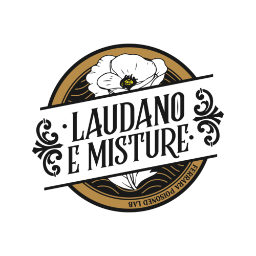

L'Oppio dei Popoli
Gin infuso al papavero · sciroppo di miele e lavanda · succo di limone fresco
Un drink seducente e vellutato, che avvolge il palato in un abbraccio speziato.

Laudano e MistureFerrara Poisoned Lab
Benvenuti nel nostro Poisoned Lab. Da Laudano e Misture non ci limitiamo a servire drink: studiamo, maceriamo e infondiamo. Ogni ricetta è un esperimento, un equilibrio perfetto tra erbe officinali, alcolici pregiati e segreti che si tramandano da generazioni. Un angolo di Ferrara dove il tempo si ferma e i sensi si risvegliano.
Gin infuso al papavero · sciroppo di miele e lavanda · succo di limone fresco
Un drink seducente e vellutato, che avvolge il palato in un abbraccio speziato.
Rye whiskey · bitter artigianale ferrarese · assenzio · scorza d'arancia bruciata
Un tributo alla storia della città: forte, deciso, con un finale affumicato.
Rum scuro · liquore al caffè · sciroppo di zucchero di canna · peperoncino
Il nostro signature più audace, servito in un'atmosfera da laboratorio ottocentesco.